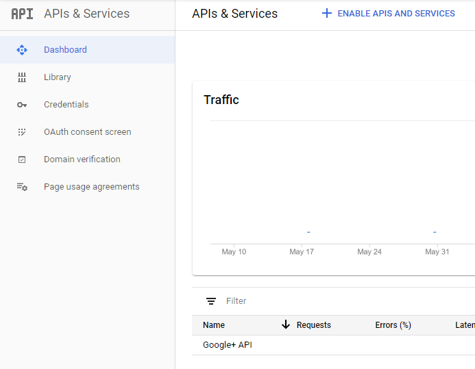
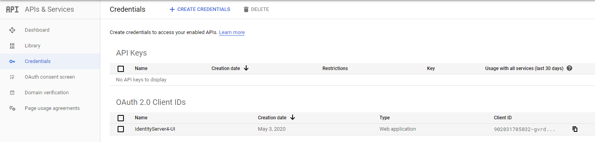
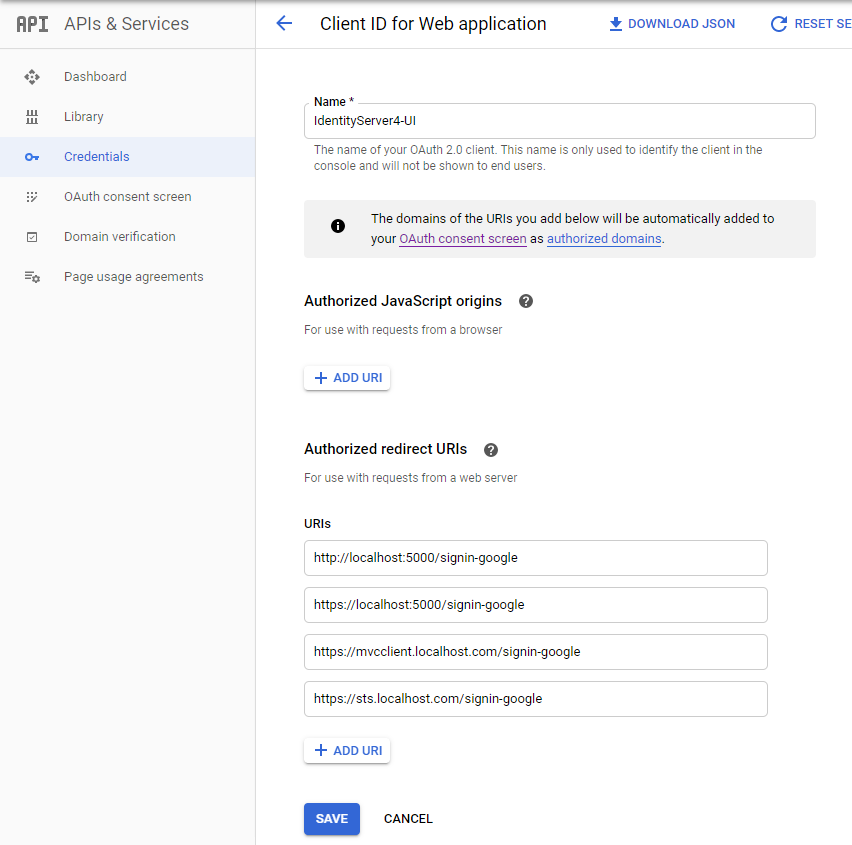

Prerequisites
DNS
We need some resolving capabilities in order for the project to work. The domain localhost.com is used here to represent the domain this setup is hosted on. The domain-name needs to be FQDN (fully qualified domain name).
Thus first, we need the domain localhost.com to resolve to the docker-host machine. If you want this to work on your local machine only, use the first option.
DNS on docker-host machine only
Edit your hosts file (C:\Windows\system32\drivers\etc\hosts) as administrator and add the following entries.
127.0.0.1 localhost.com sts.localhost.com api.localhost.com jsclient.localhost.com mvcclient.localhost.com
This way your host machine resolves localhost.com and its subdomains to itself.
DNS through external DNS server
As this setup is intended for development purposes, we can make due with a domain that can only be resolved by the host machine. If you want this to work on the complete network, you need an external DNS server that resolves for that domain. Your containers need to be able to resolve that same domain. In other words, you would need a DNS proxy as well. That would need some extra configuration using dns-proxy-server, which is left out here. Using a public DNS allows you to use Let's Encrypt.
Certificates
We also need certificates in order to serve on HTTPS. We'll make our own self-signed certificates with mkcert.
If the domain is publicly available through DNS, you can use Let's Encypt. Nginx-proxy has support for that, which is left out in this setup.
Install MkCert
You can either just download the binary and add it to your PATH environment variable or use choclately to install it.
choco install mkcert
Create the root certificate
Use mkcert to generate local self-signed certificates.
On windows mkcert -install must be executed under elevated Administrator privileges. Then copy over the CA Root certificate over to the project as we want to mount this in later into the containers without using an environment variable.
cd compose/nginx/certs
mkcert --install
copy $env:LOCALAPPDATA\mkcert\rootCA.pem ./cacerts.pem
copy $env:LOCALAPPDATA\mkcert\rootCA.pem ./cacerts.crt
Create the localhost.com certificates
Generate a certificate for localhost.com with wildcards for the subdomains. The name of the certificate files need to match with actual domain-names in order for the nginx-proxy to pick them up correctly. We want both the crt-key and the pfx version.
cd compose/nginx/certs
mkcert -cert-file localhost.com.crt -key-file localhost.com.key localhost.com *.localhost.com
mkcert -pkcs12 localhost.com.pfx localhost.com *.localhost.com
Adding Google OIDC (optional)
We want to allow authentication through google as well although it being optional. For this to work, we need to create a OAuth 2.0 Client in the Google developer console.
Add a new project and enable the Google+ API

Add a OAuth 2.0 Client called IdentityServer4-UI. You can choose whatever name you like.

And configure the possible redirects. We added both the localhost with the ports (for running directly from Visual Studio without docker-compose) and the URI's used by docker-compose.

Capture the ClientID and ClientSecret on the same page on the right.
We want to add these to the user secret json (to avoid checking them in to git). The user secrets are mounted automatically through docker-compose into the STS container, so these are available there.
Create a C:\Users\<username>\AppData\Roaming\Microsoft\UserSecrets\347ad42e-1172-4c2d-a1f6-115dc46e55be\secrets.json
with the following content
{
"Google:ClientSecret": "<your google client secret>",
"Google:ClientId": "<your google client id>"
}
That should get the Google authentication to work properly.